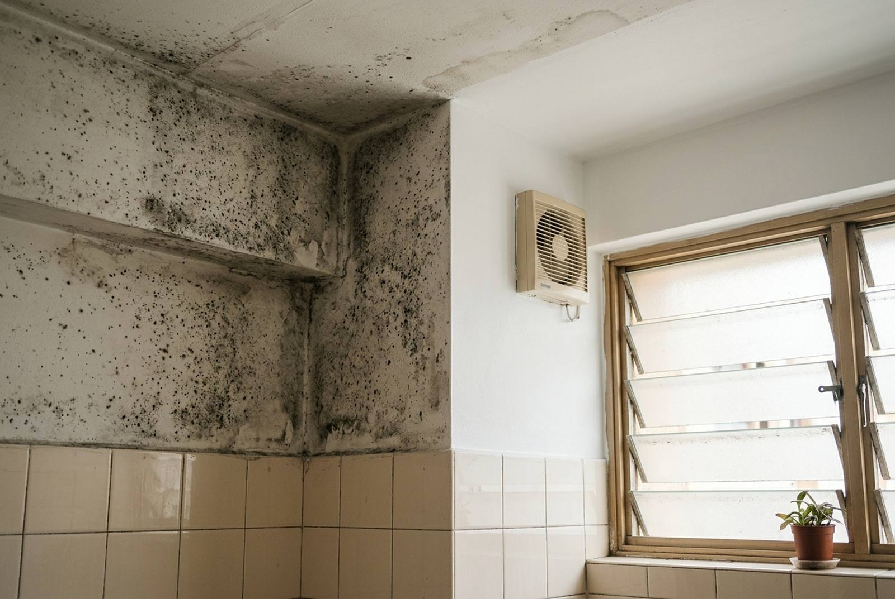

Anti-mould paint in Singapore: does it work?

Yes, with a condition. Anti-mould paint works well against mould that grows from condensation and humidity, which is most of the black speckling on Singapore bathroom ceilings and behind wardrobes. It does nothing against mould fed by water coming through the wall, and over a leak it only hides the problem for a while. Tell the two apart first, kill the mould properly before painting, and an anti-mould repaint of a bathroom ceiling or a bedroom wall is one of the cheaper jobs in a flat.
Why mould keeps coming back in Singapore
Singapore's average relative humidity sits above 80 percent all year. Mould needs three things: moisture, a surface to feed on, and still air. A flat supplies all three in predictable places:
- Bathroom ceilings, where hot showers put water into the air and it condenses on the coolest surface above. The corner furthest from the window goes first.
- Behind wardrobes and beds pushed flat against an external wall, where no air moves.
- Rooms air-conditioned at night and shut all day. The walls cool down overnight, then warm humid air meets them in the morning.
- Kitchens without a working hood, especially above the stove and around the window.
- Around windows where the frame sealant has aged and lets moisture in at the reveal.
Ordinary emulsion is itself a surface mould can live on. Anti-mould paint contains a fungicide (a biocide) in the film that stops spores from establishing on it. That is the entire mechanism. It does not waterproof anything and it does not dry a wet wall.
Condensation or a leak? Check before you paint
This decides whether the job is a $150 repaint or a plumbing and waterproofing problem. Signs that it is condensation, which anti-mould paint handles well:
- Small, evenly spread black or grey dots, worst in corners and above the shower.
- It gets worse in a wet week and better when the room is ventilated.
- The plaster underneath is hard and dry when you scrape a spot.
Signs that it is water coming through, which paint cannot fix:
- A patch with a defined edge or a tide-mark ring, often brown or yellow as well as black.
- Paint bubbling, or plaster that is soft or powdery when scraped.
- It sits on a wall that backs onto a shower, a kitchen sink or an external face, or on a ceiling below another bathroom.
- It came back in the same shape after a previous repaint.
If it is water, the order is: find the source, fix it, let the wall dry fully, then paint. That usually means bathroom waterproofing, regrouting and resealing, or a conversation with the flat upstairs. Our guide to ceiling water stains covers the ceiling case, and peeling paint and wall repair covers walls where the plaster has already let go.
Preparation is the job
Painting anti-mould paint straight over live mould is the most common mistake we see, and it fails within months: the spores under the new film are alive, and they come through. A proper job has five steps:
- Kill the mould. Treat the affected area with a fungicidal wash and leave it to work. Wear a mask and ventilate; do not dry-brush mould into the air.
- Remove it. Scrub and scrape off the dead growth and any loose or flaking paint.
- Let it dry completely. On a bathroom ceiling this means not using the shower for several hours, ideally with the exhaust fan running.
- Seal. Stained areas get a stain-blocking sealer, otherwise the grey shadow bleeds back through white paint.
- Two coats of anti-mould finish. The fungicide works in the film, so the film needs its full thickness. One thin coat is a false economy.
Paint the whole ceiling or wall, not just the patch. A patch of new paint on an old ceiling shows as a different white, and the mould simply starts again at the edge of the treated area.
What it costs
Anti-mould paint costs more per tin than standard emulsion, but on a small job the labour and preparation are most of the bill. Indicative 2026 prices, labour and materials:
| Job | What it covers | Indicative cost (SGD) |
|---|---|---|
| Bathroom ceiling | Fungicidal wash, scrape, stain sealer, two coats anti-mould | $120 – $250 |
| One bedroom wall behind a wardrobe | Same treatment, one wall | $100 – $200 |
| Whole bedroom | Walls and ceiling, anti-mould finish throughout | $200 – $350 |
| Whole flat repaint with anti-mould in wet areas | Standard emulsion in living areas, anti-mould in bathrooms and kitchen | Standard repaint plus about $100 – $250 |
For comparison, a standard single-room repaint starts from about $120 and a whole 4-room flat runs $650 to $1,100 (see HDB painting cost). Using anti-mould paint only where it is needed, in the bathrooms and kitchen, keeps the premium small.
Where it is worth using, and where it is not
| Area | Anti-mould paint? |
|---|---|
| Bathroom ceilings and upper walls | Yes. The single best use of it. |
| Kitchen ceiling and the wall behind the stove | Yes, in a washable finish. |
| Bedroom walls on the external face, or behind wardrobes | Yes, if mould has appeared before. |
| Living room and dry bedrooms with no history of mould | Usually not needed. Standard emulsion is fine. |
| Any wall with an active leak | No. Fix the water first. |
Keeping it from coming back
An anti-mould finish buys you years, not forever, if the room stays wet. The cheap habits that make it last:
- Run the bathroom exhaust fan during the shower and for 15 to 20 minutes after. If there is no fan, leave the window and door open. A bathroom exhaust fan is a small electrical job if there isn't one.
- Squeegee the shower glass and walls. Less water left to evaporate.
- Leave a gap of a few centimetres between wardrobes and external walls.
- Air the room in the day if it is air-conditioned at night.
- Keep the aircon serviced. A dirty coil and a blocked drain pan put moisture and spores back into the room.
- Replace black silicone around the shower and basin rather than bleaching it. Mould lives inside old sealant.
Mould at handover
Mould on a bathroom ceiling is one of the things landlords look up at during a handover inspection, and bleach alone leaves a grey shadow that still reads as mould. If you are moving out, a treated and repainted ceiling is usually part of the touch-up, and it fits into our move-out packages in the same visit as the deep clean.
Frequently asked questions
Does anti-mould paint really work?
Yes, against mould that grows from condensation and humidity, which is most mould on Singapore bathroom ceilings and behind wardrobes. The paint film contains a fungicide that stops spores from establishing on it. It does not stop water coming through a wall, so over a leak it only delays the mould's return.
Can I paint anti-mould paint over existing mould?
No. The mould under the new film is still alive and comes back through within months. Kill it with a fungicidal wash, scrape off the dead growth and loose paint, let the surface dry completely, seal any stains, then apply two coats.
How much does it cost to treat and repaint a mouldy bathroom ceiling?
About $120 to $250 for labour and materials, including the fungicidal wash, scraping, a stain-blocking sealer and two coats of anti-mould paint. A whole bedroom with an anti-mould finish is around $200 to $350.
Why does mould keep coming back on my bathroom ceiling?
Usually because the steam from showers has nowhere to go and condenses on the ceiling, or because the previous repaint went over live mould. Run the exhaust fan during and after showers, keep the door or window open, and have the ceiling treated before it is repainted. If the patch has a defined edge or a brown ring, check for a leak from above.
Do I need anti-mould paint for the whole flat?
Rarely. Use it in bathrooms, the kitchen and any room that has had mould before. Dry living areas are fine with standard emulsion, which keeps the extra cost small.
Is anti-mould paint the same as waterproof paint?
No. Anti-mould paint resists fungal growth on the surface. Waterproofing is a membrane under the tiles in wet areas that stops water getting into the structure. If water is getting through, the fix is waterproofing or plumbing, not paint.
Getting it done by RK E&C
RK E&C is a Singapore-registered renovation and handyman company (UEN 202442767D) that paints, plasters and waterproofs HDB flats and condos island-wide. That combination matters with mould: if we find that the patch is being fed by a failed shower membrane or grout rather than by condensation, we can deal with the cause in the same job instead of painting over it and leaving you to find it again next year.
We name the fungicidal wash, the sealer and the number of coats as lines on the quote. Send photos of the mould and the room around it through our contact form or WhatsApp, or see our painting services for the rest of what we paint.
Mould back on the ceiling again?
Send a photo. We will tell you whether it is condensation or a leak before you spend anything, then quote a fixed price to treat and repaint it properly.
Prices are indicative of the Singapore market in 2026 and are not a quotation. Area, extent of mould, access and whether there is an underlying leak drive the cost. Confirm a fixed price after a site visit.